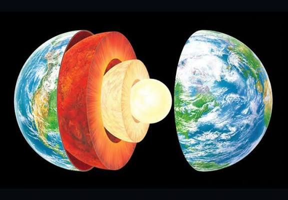

Earth
Supports life; has water & oxygen.

အရွယ်အစား
12,742 km
တစ်နေ့ကြာချိန်
24h
အပူချိန်
≈ 15 °C ပျမ်းမျှ
လများ
1 Moon
Earth သည် Solar System ထဲတွင် Sun မှ တတိယမြောက်အကွာအဝေးရှိသော ဂြိုလ်ဖြစ်ပြီး သက်ရှိများ နေထိုင်နိုင်သည့် တစ်ခုတည်းသော ဂြိုလ်ဟု သိပ္ပံပညာရှင်များက ယခုအချိန်ထိ သိရှိထားကြသည်။ Earth ကို “Blue Planet” ဟုလည်း ခေါ်ကြသည်။ အကြောင်းမှာ ဂြိုလ်မျက်နှာပြင်၏ အများစုကို ရေဖြင့် ဖုံးလွှမ်းထားသောကြောင့် အာကာသမှ ကြည့်လျှင် အပြာရောင်ဖြစ်နေသည်။ Earth ၏ မျက်နှာပြင်၏ အประมาณ 71% သည် သမုဒ္ဒရာများဖြစ်ပြီး ကျန်သော 29% သည် မြေပြင်၊ တောင်တန်းများ၊ သစ်တောများနှင့် မြို့များဖြစ်သည်။ Earth တွင် လေထုရှိပြီး အောက်စီဂျင်၊ နိုက်ထရိုဂျင် စသည့်ဓာတ်ငွေ့များ ပါဝင်သောကြောင့် လူသားများနှင့် တိရစ္ဆာန်များ အသက်ရှင်နိုင်ကြသည်။ Earth သည် မိမိကိုယ်တိုင် လှည့်ပတ်မှု (rotation) ကြောင့် နေ့နှင့်ည ဖြစ်ပေါ်ပြီး Sun ကို လှည့်ပတ်မှု (revolution) ကြောင့် နှစ်ရာသီများ ဖြစ်ပေါ်လာသည်။ Earth သည် တစ်ပတ်လည် လှည့်ပတ်ရန် 24 နာရီခန့်ယူပြီး Sun ကို တစ်ပတ်လည် လှည့်ပတ်ရန် 365 ရက်ခန့်ယူသည်။ Earth ၏ သဘာဝအပေါင်းအသင်းများတွင် သစ်တောများ၊ မြစ်များ၊ သမုဒ္ဒရာများ၊ တောင်တန်းများနှင့် မတူညီသော ရာသီဥတုစနစ်များ ပါဝင်သည်။ ထို့ကြောင့် လူသားများ၊ တိရစ္ဆာန်များနှင့် အပင်များ အမျိုးမျိုးသည် Earth ပေါ်တွင် အသက်ရှင်နေထိုင်နိုင်ကြသည်။

Internal Structureထူးခြားချက်များ
အသက်ရှင်နိုင်သော ဂြိုလ်တစ်ခု ရေနှင့် အောက်စီဂျင်ရှိခြင်းကြောင့် တိရစ္ဆာန်များ နေထိုင်နိုင်သည်။ တစ်ပတ်လည်လှည့်ပတ်မှုကြောင့် နေ့နှင့်ည ဖြစ်ပေါ်ခြင်း